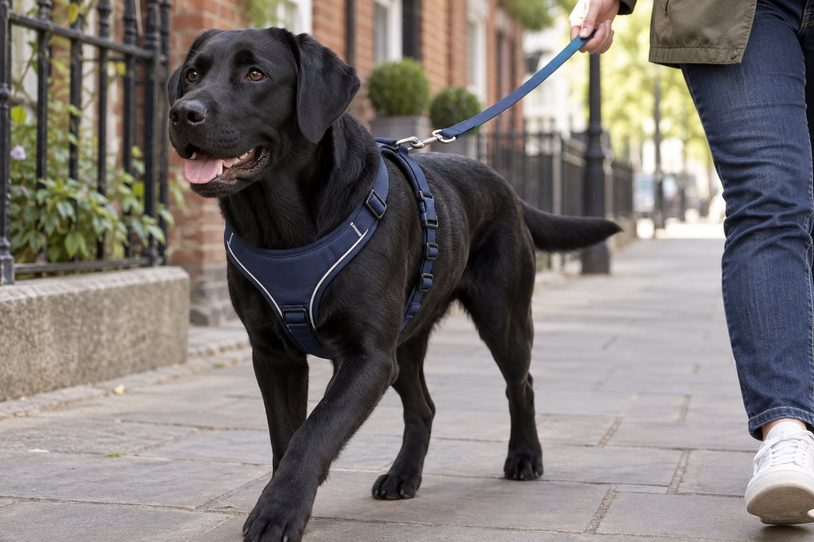

A comfortable harness lies flat, stays on when the dog backs up, and lets the shoulders move normally. Adjust it on the standing dog, then test it during a short, supervised walk.
A harness can feel secure in your hands and still rub behind a dog’s front legs or slide off when the dog reverses. The label on the package is only a starting point. The real test is your dog’s body in motion: where each strap sits, whether the dog can walk naturally, and whether the harness remains secure without digging into the skin.
Measure the dog before choosing a size
Use a soft tape measure around the widest part of your dog’s chest, generally behind the front legs, and compare the number with the maker’s chart. Different brands use different shapes and ranges, so a medium in one line may fit nothing like a medium in another. Measure with the dog standing naturally rather than curled up. If you are between sizes, look at the actual adjustment range and return policy instead of guessing that the bigger size is always safer.
Look at the shape of the front piece. A Y-shaped chest design may leave more room for shoulder movement than a strap lying directly across the joint, but design alone does not guarantee a fit. Dogs vary in chest depth, neck width, coat thickness, and body length. A short-bodied dog may need a different shape from a deep-chested dog with the same girth. Try the harness on indoors with tags attached until you know it suits your dog.
Check the hardware and material as well as the size. Buckles should close securely and remain away from the armpit. A clip should match the leash position you intend to use. Padding can be helpful if it sits flat; thick seams in the wrong place can still rub. A wet harness may stretch, hold moisture, or feel different on the coat. Inspect stitching, straps, and the leash ring before every walk, particularly after a dog has chewed or scraped the gear.
Do not use the fitting session as a test of obedience. Let a dog sniff the harness and reward voluntary steps toward it. If the dog resists putting a head through an opening, choose a step-in design or practice the motion gradually. The first goal is safe, calm wearing for a few seconds indoors. A dog who freezes in a new harness may need a slower introduction or a different model, not pressure to complete a long walk.
Adjust straps on a standing dog
Put the harness on according to its instructions and straighten any twisted strap. Find the chest panel, neck opening, and girth strap, then look at the dog from the front and both sides. A strap should not sit in the armpit or press on the throat. Run your fingers beneath the edges: there should be room for comfortable movement without a gap big enough for the dog to escape. A common finger rule is only a rough clue because finger size and coat thickness vary.
Ask the dog to take a few steps across the room. Watch whether the front legs move freely and whether the chest piece stays centered. If the harness rotates or slides to one side, readjust and test again. Feel behind the elbows after movement; this is where rubbing may appear. Check the neck opening when the dog lowers its head and when it looks up. A position that looks fine while standing still may shift during ordinary sniffing.
Test security without frightening the dog. With a loose leash attached, gently check whether the harness could slide toward the head if the dog steps backward. Do this in a closed room, not beside traffic. If it slips or the dog can back out, choose a different adjustment or design. No harness is a substitute for supervision, a secure leash, and suitable identification. For dogs with a history of escaping equipment, ask a qualified trainer or veterinarian about safer management before an outdoor trial.
Take the harness off and look at the coat and skin after a short first walk. Temporary flattened fur is different from red skin, hair loss, or a tender rub mark. If you see irritation, stop using that harness until the cause is resolved. Do not simply tighten it further to prevent movement; too much pressure can create a new problem. Keep notes on where the strap rubbed and how the dog moved so you can compare another size or style.

Watch the harness during a real walk
Begin with a familiar route and a calm pace. Watch from the side if another person can safely walk the dog, or pause and observe a few steps. The shoulders should move without an obvious shortened stride. The chest piece should remain centered as the dog turns and sniffs. A harness that creeps forward toward the neck or backward over the ribs needs another adjustment. Dogs often hide mild discomfort while excited outside, so check skin again when you return.
The leash attachment changes how the gear behaves. A back clip may suit a dog walking loosely, while a front clip can change the direction of force when the dog pulls. Neither teaches loose-leash walking by itself. Avoid continuous tension and sudden jerks. If your dog pulls hard enough that the harness shifts or you struggle to control the walk, work on reward-based leash skills in a quieter place and seek qualified help where needed.
Imagine a dog whose harness fits during a five-minute indoor test but rubs after a forty-minute hike. Sweat, wet fur, repetitive movement, or a backpack attachment may reveal pressure you missed. Start with shorter outings and inspect the same locations each time. If an active dog develops a sore, stop using the gear and ask a veterinarian about the skin. Once the area is comfortable, reassess harness shape and activity instead of returning immediately to the same long route.
Never leave a walking harness on an unsupervised dog unless a veterinarian or other qualified professional has advised a specific reason and safe setup. Straps can snag on furniture or be chewed. Remove it after the walk, dry it if needed, and check for damage before storing it. A simple routine of fit check, short walk, skin check, and gear check catches most practical problems before they become a repeated source of discomfort.
The four-part harness check
- Standing fitStraighten straps and check throat and armpit clearance.
- Walking fitWatch shoulder movement and whether the chest piece stays centered.
- SecurityGently test backward movement in a safe indoor space.
- After-walk skinRemove the harness and inspect contact points for rubbing.
Recheck fit as the dog changes
Weight change, growth, a new haircut, and seasonal coat changes can all alter fit. A puppy may outgrow a harness quickly, while an older dog can lose muscle around the shoulders. Recheck after grooming or illness rather than waiting for a visible sore. Compare the chest measurement with your last record and inspect how the straps sit now. If you have adjusted to the end of the range, the harness may no longer be the right size.
For a long-haired dog, move the fur under the strap with your fingers to see whether a seam is rubbing the skin. For a short-haired dog, look for pink patches along the chest and behind the elbows. A dog with a broad chest and narrow waist may need a different body shape rather than a tighter strap. If your dog has mobility limitations or pain, ask your veterinarian whether the harness provides useful support and how to avoid pressure on sensitive joints.
Clean the harness according to its label and let it dry fully. Dirt caught under a strap can abrade skin; a damp harness can irritate a dog who wears it for long outings. Inspect buckles for cracks and webbing for fraying. Replace equipment that cannot hold a secure adjustment. Do not rely on a clip that opens unpredictably simply because it has worked so far. A backup connection may help in particular circumstances, but the primary harness must fit properly.
If a dog suddenly avoids the harness after wearing it happily for months, pause. The dog may be reacting to a painful area, a frightening walk, or a change in the gear. Check skin and movement first, then rebuild a positive introduction if physical discomfort has been ruled out. A calm fitting process makes future adjustments easier than forcing the dog through the opening each day.
Troubleshoot common fit problems
If the harness slides sideways, make sure the front panel is centered and each strap follows its intended path. Tighten or loosen only one point at a time, then let the dog move. If it still rotates, the design may not match the dog’s body shape. If the dog backs out, test a more secure style in a closed space and consult a trainer about safe walking while you solve the issue. If the dog coughs when the leash tightens, check for pressure on the throat and speak with a veterinarian if coughing persists.
If a strap leaves a red line, take a break from that harness and allow irritated skin to be assessed when needed. Padding placed over a badly positioned strap may hide the problem without fixing pressure. If the front legs look restricted, compare the location of the shoulder joint with the front straps while the dog walks. You may need a differently shaped chest opening, not simply a larger size. Ask a knowledgeable fitter or veterinarian to watch the dog move if the issue remains unclear.
Keep expectations realistic: there is no universal best harness for every dog. The most expensive product can still fit poorly, and an inexpensive one can work well if it is secure, comfortable, and maintained. Test the exact harness on the exact dog. Bring photos and measurements when shopping, and choose a retailer with a sensible exchange option if possible. A brief indoor trial is worth more than a package promise about perfect control.
The practical standard is easy to remember: the dog can move naturally, the harness stays in place, the skin remains comfortable, and the leash connection is secure. Recheck these points whenever the dog or activity changes. If safety or pain remains uncertain, ask your veterinary team for an individual recommendation before making the harness your daily walking gear.
A useful fitting photo set includes a front view, both sides, and a short video of the dog walking on a loose leash. If you consult a veterinarian, trainer, or knowledgeable retailer, those images show movement that a still measurement cannot. Take them before an outing and again after adjusting a strap. Note the harness make and size so advice refers to the exact equipment, not a generic style.
In a two-person household, show both walkers how the straps should sit. One person may loosen the harness to put it on quickly while another tightens it before each walk, creating inconsistent fit. Mark the preferred adjustment position unobtrusively if the product allows it, and recheck after washing. A harness that looks correct only when one person fastens it is not yet a reliable daily setup.
Small dogs can be especially easy to lift by the harness, but a walking harness is not automatically a safe lifting device. Unless the product is specifically designed and approved for that purpose, support the dog’s body with your hands according to veterinary advice. Likewise, do not attach a car seat belt to a walking harness and assume it provides crash protection. Vehicle restraint requires a product designed and tested for that use.
Continue exploring
For a broader routine, read How Often Should You Bathe Your Dog?, How to Clean Your Dog's Ears Safely at Home, and How to Brush a Dog's Coat Without Pulling.
Frequently Asked Questions
How tight should a dog harness be?
It should lie flat without digging in and remain secure when the dog steps backward. Finger space is only a rough guide; check the exact harness while your dog stands and walks.
Can a harness stop pulling?
A harness can change where leash pressure is applied, but it does not replace reward-based loose-leash training. If pulling makes the gear shift or the walk unsafe, train in easier settings and ask for help.
When should I replace a dog harness?
Replace it if buckles fail, stitching frays, the dog outgrows the adjustment range, or repeated fit changes still leave rubbing or escape risk. Recheck after grooming and weight changes.
Editorial references
These resources informed the general guidance in this article. They do not replace advice tailored to your pet.
This guide offers general information. Your pet’s age, health, and history may call for a different plan. For medical concerns, ask your veterinarian.